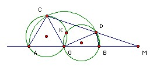
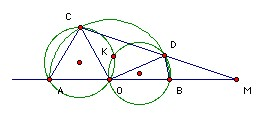

| 1. A goods train left Moscow at x hrs y mins and arrived in Saratov at y hrs z mins. The journey took z hrs x mins. Find all possible values of x. | |
| 2. The chord CD of a circle center O is perpendicular to the diameter AB. The chord AE goes through the midpoint of the radius OC. Prove that the chord DE goes through the midpoint of the chord BC. | |
| 3. f(x), g(x), h(x) are quadratic polynomials. Can f(g(h(x))) = 0 have roots 1, 2, 3, 4, 5, 6, 7, 8? | |
| 4. Can the integers 1 to 81 be arranged in a 9 x 9 array so that the sum of the numbers in every 3 x 3 subarray is the same? | |
| 5. Solve cos(cos(cos(cos x))) = sin(sin(sin(sin x))). | |
| 6. Does there exist a sequence of positive integers such that every positive integer occurs exactly once in the sequence and for each k the sum of the first k terms is divisible by k? | |
| 7. A convex polygon has all angles equal. Show that at least two of its sides are not longer than their neighbors. | |
| 8. Can we find 12 geometrical progressions whose union includes all the numbers 1, 2, 3, ... , 100? | |
| 9. R is the reals. f: R → R is any function. Show that we can find functions g: R → R and h: R → R such that f(x) = g(x) + h(x) and the graphs of g and h both have an axial symmetry. | |
| 10. Given two points in a plane a distance 1 apart, one wishes to construct two points a distance n apart using only a compass. One is allowed to draw a circle whose center is any point constructed so far (or given initially) and whose radius is the distance between any two points constructed so far (or given initially). One is also allowed to mark the intersection of any two circles. Let C(n) be the smallest number of circles which must be drawn to get two points a distance n apart. One can also carry out the construction with rule and compass. In this case one is also allowed to draw the line through any two points constructed so far (or given initially) and to mark the intersection of any two lines or of any line and a circle. Let R(n) be the smallest number of circles and lines which must be drawn in this case to get two points a distance n apart (starting with just two points, which are a distance 1 apart). Show that C(n)/R(n) → ∞. | |
| 11. Show that we can find positive integers A, B, C such that (1) A, B, C each have 1995 digits, none of them 0, (2) B and C are each formed by permuting the digits of A, and (3) A + B = C. | |
| 12. ABC is an acute-angled triangle. A2, B2, C2 are the midpoints of the altitudes AA1, BB1, CC1 respectively. Find ∠B2A1C2 + ∠C2B1A2 + ∠A2C1B2. | |
| 13. There are three heaps of stones. Sisyphus moves stones one at a time. If he takes a stone from one pile, leaving A behind, and adds it to a pile containing B before the move, then Zeus pays him B - A. (If B - A is negative, then Sisyphus pays Zeus A - B.) After some moves the three piles all have the same number of stones that they did originally. What is the maximum net amount that Zeus can have paid Sisyphus? | |
| 14. The number 1 or -1 is written in each cell of a 2000 x 2000 array. The sum of all the numbers in the array is non-negative. Show that there are 1000 rows and 1000 columns such that the sum of the numbers at their intersections is at least 1000. | |
| 15. A sequence a1, a2, a3, ... of positive integers is such that for all i ≠ j, gcd(ai, aj) = gcd(i, j). Prove that ai = i for all i. | |
|
16. C, D are points on the semicircle diameter AB, center O. CD meets the line AB at M (with MB < MA, MD < MC). The circumcircles of AOC and DOB meet again at K. Show that ∠MKO = 90o.
 |
|
| 17. p(x) and q(x) are non-constant polynomials with leading coefficient 1. Prove that the sum of the squares of the coefficients of the polynomial p(x)q(x) is at least p(0) + q(0). | |
| 18. Given any positive integer k, show that we can find a1 < a2 < a3 < ... such that a1 = k and (a12 + a22 + ... + an2) is divisible by (a1 + a2 + ... + an) for all n. |
|
| 19. For which n can we find n-1 numbers a1, a2, ... , an-1 all non-zero mod n such that 0, a1, a1+a2, a1+a2+a3, ... , a1+a2+...+an-1 are all distinct mod n. | |
| 20. ABCD is a tetrahedron with altitudes AA', BB', CC', DD'. The altitudes all pass through the point X. B" is a point on BB' such that BB"/B"B' = 2. C" and D" are similar points on CC', DD' respectively. Prove that X, A', B", C", D" lie on a sphere. |

Russian home
© John Scholes
jscholes@kalva.demon.co.uk
30 November 03
Last updated/corrected 19 Jan 04